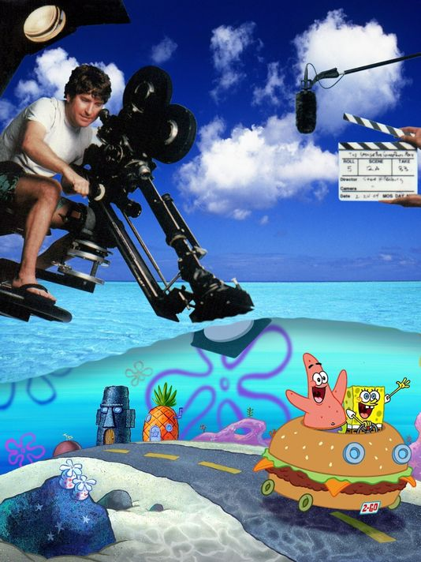

A Tribute to Stephen Hillenburg
Home
Timeline
Major Accomplishments

Hillenburg's Major Accomplishments
(1992) Won 'Best Concept Award' for
Wormholes
, an early work of Hillenburg's.
Spongebob Squarepants
is nominated for 17 Emmy Awards, including Oustanding Special Class Animated Program (2010) and Outstanding Sound Editing(2014).
Spongebob Squarepants
is awarded 17 Annie Award nominations and two British Academy Children's Awards.
(2001) Honored with the 'Walk the Talk award' from Heal the Bay.
(2002) Won the Television Animation Reward from the National Cartoonists Society.